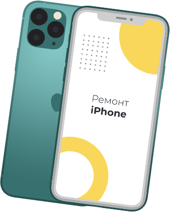

Год выпуска: 2013
Объем памяти: 8, 16 и 32 ГБ
Цвета: белый, голубой, розовый, зеленый и желтый
Номер модели на задней крышке: A1456, A1507, A1516, A1529, A1532.


iPhone 5C
Вернем 5% при заказе с сайта